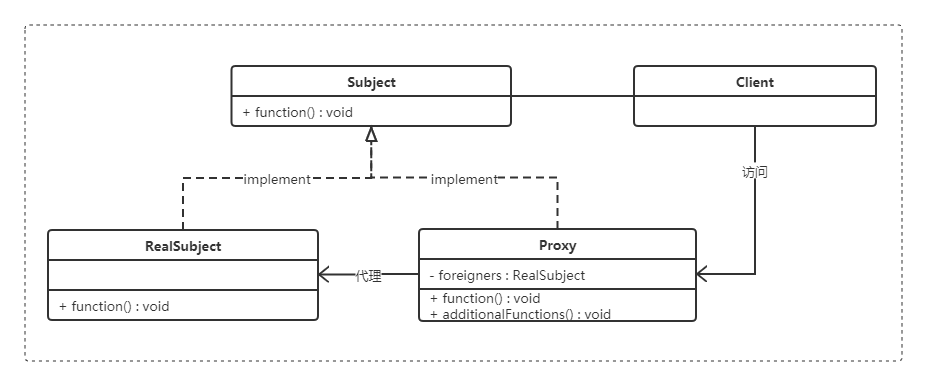
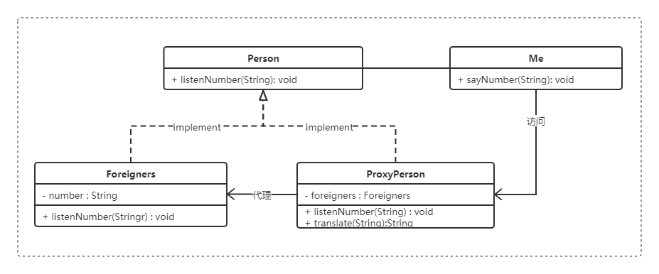

代理模式理解剖析以及应用

代理模式
代理模式——就是给某一个对象提供一个代理，并由代理对象控制对原对象的引用。
在一些情况下，一个客户不想或者不能直接引用一个对象，而代理对象可以在客户端和目标对象之间起到中介的作用。
例如电脑桌面的快捷方式就是一个代理对象，快捷方式是它所引用的程序的一个代理。
解决问题
在某种情况下，有些对象会由于各种原因的障碍，以至于不能直接访问，或直接访问此类对象会对系统带来风险。
此时只需要在系统与目标对象之间创建一个中间层，让中间层去代理目标对象，系统只需要访问中间层即可
应用环境举例
- 远程代理（Remote）：为一个位于不同的地址空间的对象提供一个局域代表对象。这个不同的地址空间可以是本电脑中，也可以在另一台电脑中。最典型的例子就是——客户端调用Web服务或WCF服务。
- 虚拟代理（Virtual）：根据需要创建一个资源消耗较大的对象，使得对象只在需要时才会被真正创建。
- Copy-on-Write代理：虚拟代理的一种，把复制（或者叫克隆）拖延到只有在客户端需要时，才真正采取行动。
- 保护代理（Protect or Access）：控制一个对象的访问，可以给不同的用户提供不同级别的使用权限。
- 防火墙（Firewall）代理：保护目标不让恶意用户接近。
- 智能引用（Smart Reference）代理：当一个对象被引用时，提供一些额外的操作，比如将对此对象调用的次数记录下来等。
- Cache代理：为某一个目标操作的结果提供临时的存储空间，以便多个客户端可以这些结果。
优点
- 代理模式能够将调用用于真正被调用的对象隔离，在一定程度上降低了系统的耦合度；
- 理对象在客户端和目标对象之间起到一个中介的作用，这样可以起到对目标对象的保护。
- 代理对象可以在对目标对象发出请求之前进行一个额外的操作，例如权限检查等。
- 职责清晰:真实角色的操作更加纯粹，不必再关注一些杂七杂八的业务。
- 高扩展性：发生业务扩展的时候方便集中管理
缺点
- 代码量会翻倍，开发效率变低
- 由于在客户端和真实主题之间增加了代理对象，因此有些类型的代理模式可能会造成请求的处理速度变慢。
- 实现代理模式需要额外的工作，有些代理模式的实现非常复杂。
类图
实现
- 接口
Person.java1
2
3
4public interface Person {
public void listenNumber(String number);
} - 真实角色
Foreigners.java1
2
3
4
5
6
7public class Foreigners implements Person {
public void listenNumber(String number) {
System.out.println("听到的是：" + number);
}
} - 代理角色
ProxyPerson.java1
2
3
4
5
6
7
8
9
10
11
12
13
14
15
16
17
18
19
20
21
22
23
24
25
26
27
28
29
30
31
32
33
34
35
36public class ProxyPerson implements Person {
Foreigners foreigners;
public void listenNumber(String number) {
//创建真实的对象
if (foreigners == null) {
foreigners = new Foreigners();
}
//翻译成数字（代理操作）
String result = translate(number);
//代理给真实的对象
foreigners.listenNumber(result);
}
// 数字翻译
public String translate(String number){
String result ;
switch (number) {
case "一" : result = "1"; break;
case "二" : result = "2"; break;
case "三" : result = "3"; break;
case "四" : result = "4"; break;
case "五" : result = "5"; break;
case "六" : result = "6"; break;
case "七" : result = "7"; break;
case "八" : result = "8"; break;
case "九" : result = "9"; break;
case "十" : result = "10"; break;
default: result = "不知道" ;break;
}
return result;
}
} - 调用者
Me.java1
2
3
4
5
6
7
8
9
10
11
12public class Me {
public static void main(String[] args) {
new Me().sayNumber("一");
new Me().sayNumber("二");
new Me().sayNumber("九");
}
public void sayNumber(String number){
Person person = new ProxyPerson();
person.listenNumber(number);
}
} - 结果此示例的大致结构如下 如图所示
1
2
3听到的是：1
听到的是：2
听到的是：9
- 我(Me)要说一个中文给外国人(Foreigners)，外国人是听不懂中文的。
- 所以我们可以找一个代理者(ProxyPerson)，此代理者拥有翻译的方法,并且经过代理者翻译之后，由代理者转述给外国人(Foreigners)。
- 此时外国人就可以听懂了
- 站在 Foreigners（外国人）的角度，Foreigners被 ProxyPerson 代理，来获得合法的数据，保证了自己能听懂（稳定性）。
- 站在 Me（我）的角度，Me寻找 ProxyPerson（代理者）之后,Me只关系自己说的内容，附加操作均由代理者完成。
- 站在 ProxyPerson（代理者）的角度，ProxyPerson完全代理Foreigners来执行Foreigners的操作。
感谢查阅